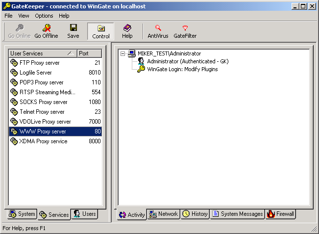
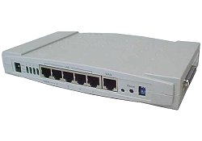

Il
router, come già detto precedentemente, e' un dispositivo che consente
la connessione di una rete LAN
(Local Area Network) di calcolatori ad un altra rete (LAN
o WAN o Internet).
Il router puo' essere sia hardware che software. I router software non sono
altro che programmi che, configurati opportunamente per le proprie esigenze,
gestiscono il traffico tra calcolatori e le connessioni tra LAN,
e talvolta sono denominati gateway.
Nel caso di router software si tratta di programmi in esecuzione in background come servizi, su calcolatori che possono svolgere altre funzioni oltre ovviamente le funzioni di Router.

Dalla figura precedente possiamo determinare quali servizi sono messi a dipsosizione dal router software, come il servizio WWW (possibilità di navigare attraverso un qualsiasi browser), FTP (protocollo di trasferimento di file), TELNET (protocollo di simulazione di terminale), POP3 (protocollo per mandare e ricevere e-mail) ed altri, ed eventualmente funzioni aggiuntive come quello di firewall.
Nel caso di router hardware ovviamente si parla di dispositivi che contengono al loro interno (come firmware) il software necessario a svolgere il compito di router.

Un router hardware è un computer a tutti gli effetti, si colloca al livello tre (network) della pila ISO/OSI, ed è composta dai seguenti elementi:
I router consentono l'interconnessione tra due reti, possono essere rappresentati come degli scambi che instradano i pacchetti in transito (dati) da una rete all'altra. Ovviamente se una rete e' la nostra rete locale (LAN) e la seconda rete è l'accesso remoto mediante modem al server Internet del nostro provider ottengo un ponte tra la LAN ed Internet: in questo caso uso il router per connettere la LAN ad Internet.
Nulla vieta ovviamente di utilizzare il Router come connessione tra due reti locali (LAN) della stessa societa' ma in sedi diverse per realizzare una rete geografica (WAN): in questo secondo caso utilizzo il router per una connessione LAN to LAN.
Quindi i router sono macchine collegate a due o più reti, che hanno il compito di far passare i pacchetti da una rete all'altra in modo da avvicinarli alla loro destinazione (i pacchetti diretti a una macchina collegata alla stessa rete del mittente arrivano a destinazione senza bisogno dei router).
Un tipico router può smistare 10.000 pacchetti al secondo; un router di alta qualità può avere una capacità teorica di 200.000 pacchetti al secondo.
I router, sia quelli utilizzati all'interno di LAN che per Internet, hanno un compito semplice: inoltrare i pacchetti che ricevono alla loro destinazione, passandoli da router a router. Per inoltrare i pacchetti fino all'ultima fermata si crea una catena di router, ognuno dei quali sa l'indirizzo del successivo sulla Rete grazie a tabelle costantemente aggiornate.
Una caratteristica funzionale di quasi tutti i router in commercio, è che consentono la connessione della LAN alla quale sono assegnati ad internet come SUA (Single User Account) ovvero sfruttando un unico Account Utente. Il provider vede il router come un unico utente connesso, in quanto a lui è assegnato l'indirizzo IP (statico o dinamico) pubblico. E' compito del router gestire il corretto instradamento dei vari pacchetti provenienti dai vari calcolatori connessi alla LAN attraverso un algoritmo chiamato NAT (network adress translation). In questo modo tutti gli utenti della LAN possono accedere ad internet anche contemporaneamente sfruttando un unico Account ed ovviamente utilizzando la banda in modo condiviso.....quindi piu' lento all'aumentare degli utenti connessi. Nel caso di connessioni in DialUp (attraverso semplice connessione telefonica) si deve inoltre considerare che la chiamata telefonica e' una sola, quindi viene occupata una sola linea del telefono ed ovviamente si paga solo per una telefonata urbana anche se stanno usando internet in contemporanea piu' utenti.
Chiaramente quando si utilizzano dei Router per condividere la connessione ad Internet, come spiegato sopra, le procedure di configurazione del PC saranno leggermente diverse, non si utilizzera' la connessione di ACCESSO REMOTO ma si configurera' l'accesso via LAN.